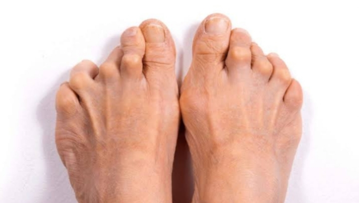

About Arthritis
Arthritis is a term used to describe the inflammation of joints, affecting more than 100 conditions that impact joints, surrounding tissues, and connective tissues. Common symptoms include joint pain, stiffness, and swelling.
Types of Arthritis
Arthritis comprises diverse conditions affecting joints. Osteoarthritis (OA) , linked to aging, involves cartilage breakdown, causing joint pain and stiffness.Rheumatoid arthritis (RA) , an autoimmune disorder, induces joint inflammation, resulting in pain, swelling, and potential deformities. Psoriatic arthritis (PsA), associated with psoriasis, affects joints and skin, leading to joint pain and swelling.Fibromyalgia involves widespread musculoskeletal pain, fatigue, and tender points. Gout, caused by uric acid crystals, triggers sudden and severe joint pain and swelling. Lupus, an autoimmune disease, affects joints, skin, and organs, causing joint pain, skin rashes, and fatigue. Each type demands tailored management for optimal treatment.
Symptoms
Arthritis symptoms encompass persistent joint pain, inflammation indicated by redness, and increased warmth around affected joints. Swelling, caused by fluid accumulation, and reduced range of motion, especially in the morning, are common. Fatigue, associated with the body's response to inflammation, accompanies arthritis. Severe cases may result in joint deformities over time, while certain types, like psoriatic arthritis, exhibit skin changes. Autoimmune arthritis may lead to symptoms such as fever.Cure and Management
Arthritis management involves weight loss to ease stress on joints, low-impact exercises for flexibility, and a balance of activity and rest. Assistive devices like canes and adaptive tools aid daily activities. Medication management, including anti-inflammatory drugs, is crucial. Physical therapy enhances joint function, and in severe cases, surgery may be considered for joint repair or replacement. This holistic approach aims to improve the overall well-being of individuals dealing with arthritis.